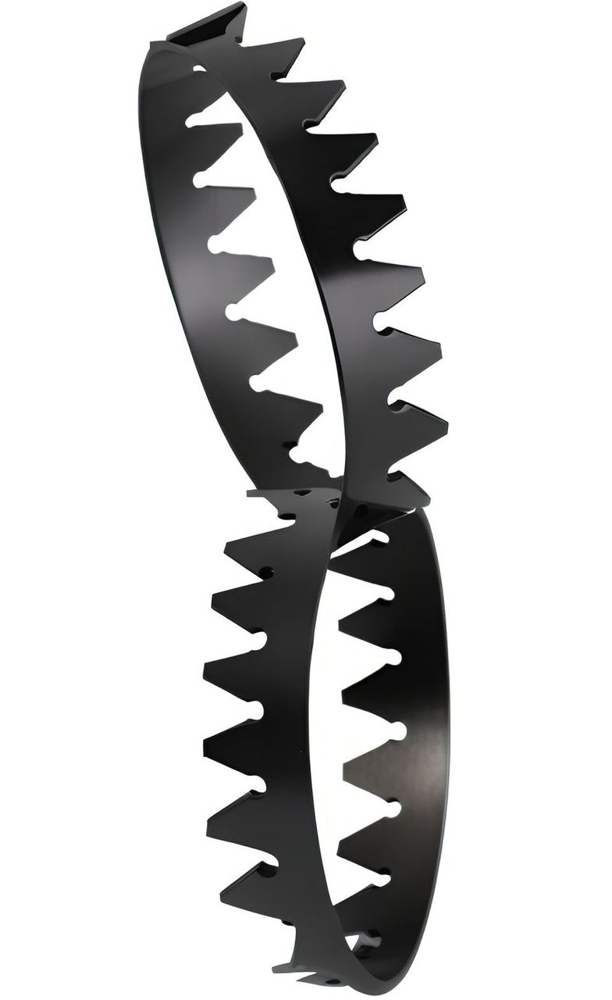

Queen Frelsa Marron now sits on the throne while her husband is going on a rampage hoarding everything shiny, and killing everyone who has something shiny. If you get to Manferro early, you can find a woman named Arsteed Harsson who was the one who stole the crowns. Talking to her reveals that she's a thief who stole the crowns for the Sahares king in exchange for a huge amount of money, but when she saw how much it meant to the king, she didn't want to give it to the Sahares king, but she couldn't just give it back either. She says she's willing to give the crowns to you if you can get her out of Manferro. This either requires killing the king, or finding the sewers in Manferro. If you get here late, you find a corpse of Arsteed and a maddened version of her. She's gone mad for losing the hope of escaping. If you kill the king you get the pieces of the broken crown. Giving the crowns to Mahhad while he's in Manferro will result in the king killing him(if he's alive), obtaining the crowns, and Mahhad losing every limited item he was selling before, since the king broke them. Giving the crowns to Mahhad will unlock all Manferro specific upgrades, unless he's killed by the king. Giving him the pieces will only unlock some. If you return the crowns to the queen, she will gain her power back and help you defeat the king, enabling you to start his fight. Returning the pieces of the crowns will do nothing as she can't use the crowns in a broken state. While the king has the crowns, he's powered up and harder to defeat. If you have the crowns in your inventory the king will attack you triggering his boss fight. However you cannot initiate the fight if he or you don't have the crowns as he will just knock you back. If he gains the crowns he will return to his throne and you can initiate the fight by approaching him.
